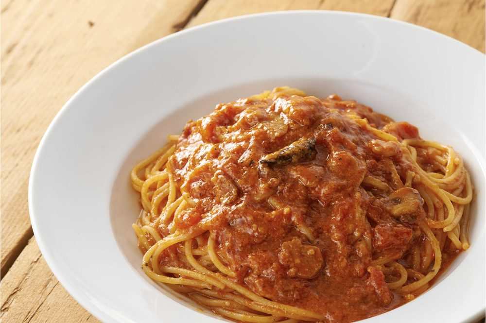
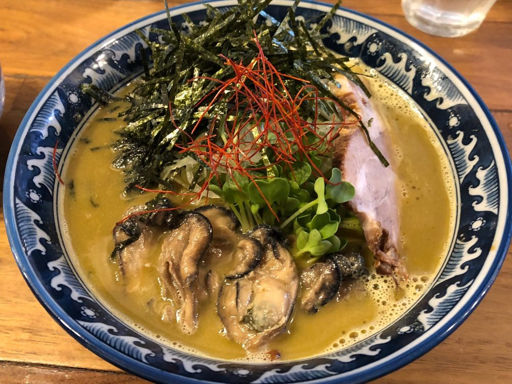
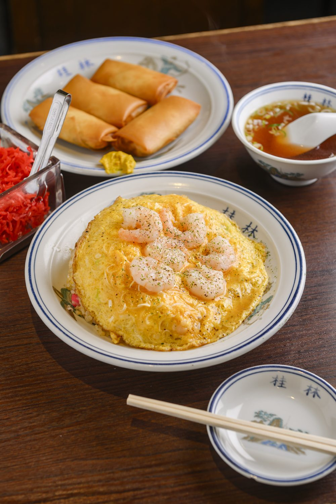
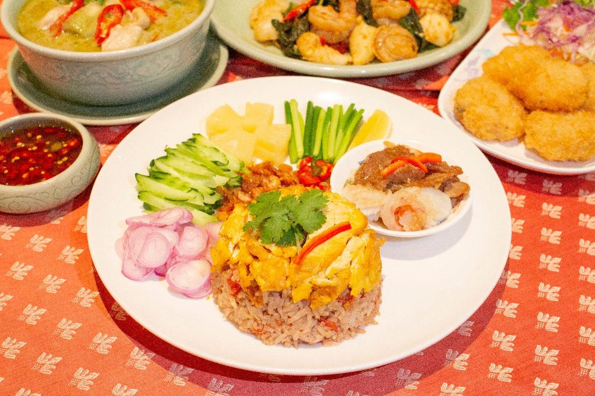
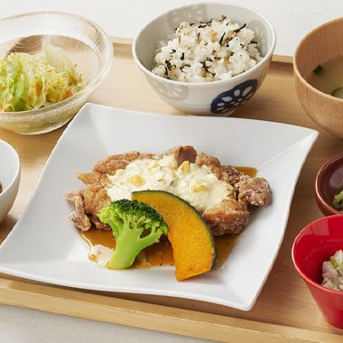
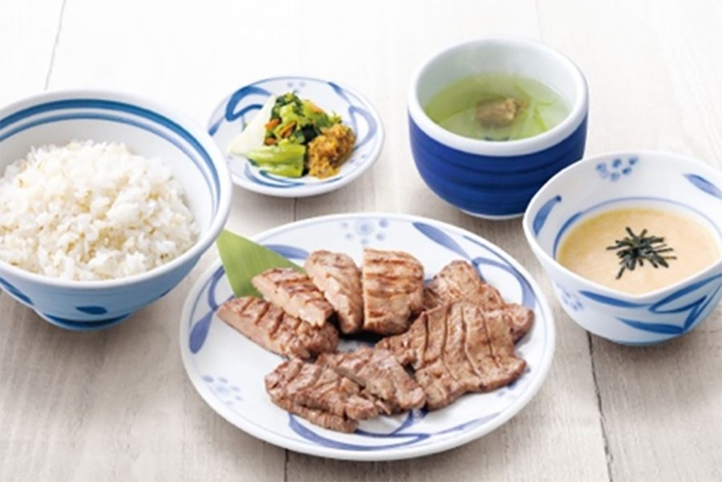

13:40上映終了 → 13:45から入れる店だけを厳選（2026年11月20日時点の営業情報で確認済み）

イタリアン上映が終わったらそのまま入れる一番ラクな一軒。名物はトマトとニンニクのスパゲティ。
Google マップで開く
ラーメン広島産牡蠣の濃厚スープが名物の無化調ラーメン。通し営業だから遅めでも安心。
※ 支払いは現金のみ
Google マップで開く
中華1977年創業の町中華。ふわとろ半熟卵と大きな海老のチャーハンが看板。鳥そば（¥900）も。
※ 現金のみ ・ 人気店で行列あり
Google マップで開く
タイ料理タイ人シェフの老舗。ランチが16時まで続くので、遅めランチにいちばん相性がいい。グリーンカレーやガパオのセットが揃う。
Google マップで開く
和食・定食野菜たっぷりのバランス定食。ごはんと味噌汁はおかわり無料。ゆっくり座って話したいときに。
Google マップで開く
牛タン炭火焼き牛たん＋とろろ＋麦めしの定番セット。駅近でサッと入ってしっかり食べられる。
Google マップで開く